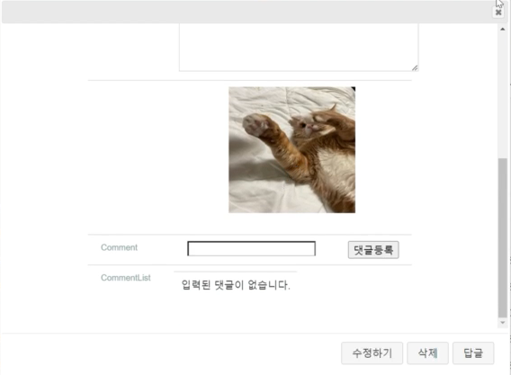
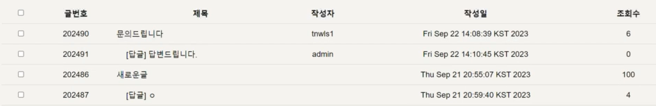
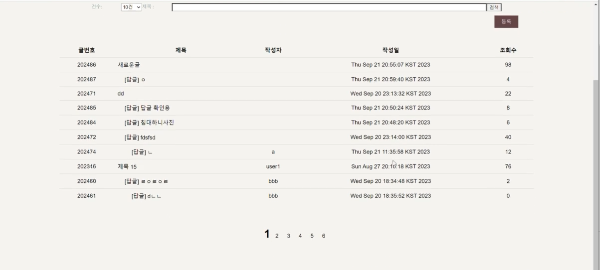
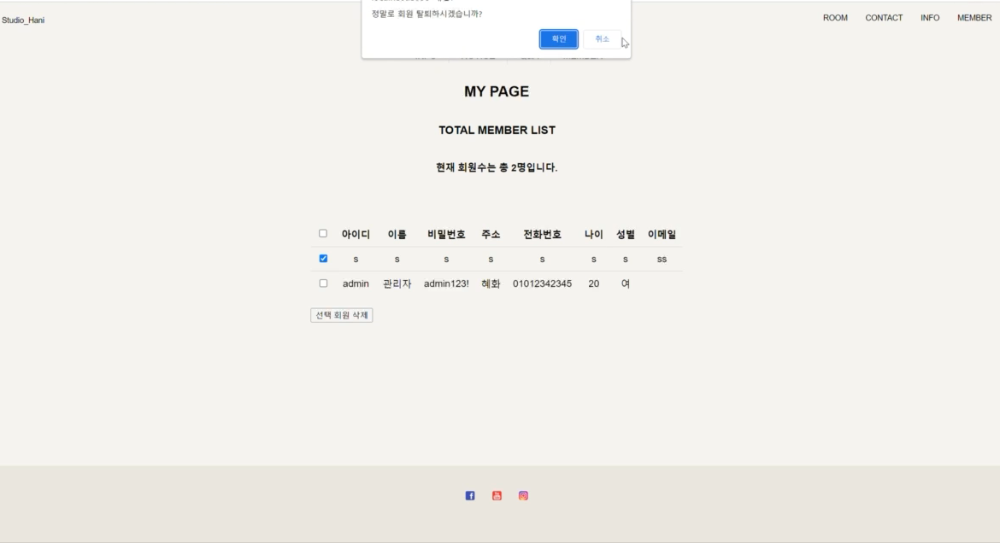

스프링을 이용하여 회원관리, 게시판 작성 및 관리, 댓글 작성, 관리자 페이지 보기가 가능한 개인 홈페이지입니다. 로그인하지 않을 시에는 글 작성을 할 수 없고, 본인이 작성한 글만 수정, 삭제가
가능합니다. 관리자는 모든 회원의 글을 삭제할 수 있으며 Q&A 게시판에는 답글 기능을 추가했습니다.

첨부파일
게시글 내에 이미지 파일 첨부가 가능하며 댓글 작성 및 수정이 가능합니다.

답글
QNA게시판에 사용자가 남긴 글에 답글작성이 가능하고 비동기 통신을 활용하여 페이지 전환 없이 작성이 가능합니다. 또한 게시글 작성폼은 Jquery Dialog를 활용하여 모달
형태로 구현했습니다

페이징
게시글을 건수대로 페이징 처리하였습니다. 상단 건수에 있는 드롭박스를 누르면 게시글 개수가 선택이 가능합니다. 게시글 제목을 검색할 수 있습니다.

관리자 페이지
회원목록 출력, 회원 탈퇴, 게시글 삭제 및 공지사항 작성
모든 회원의 정보를 조회할 수 있으며, 다중 선택하여 회원의 계정을 삭제시킬 수 있습니다.